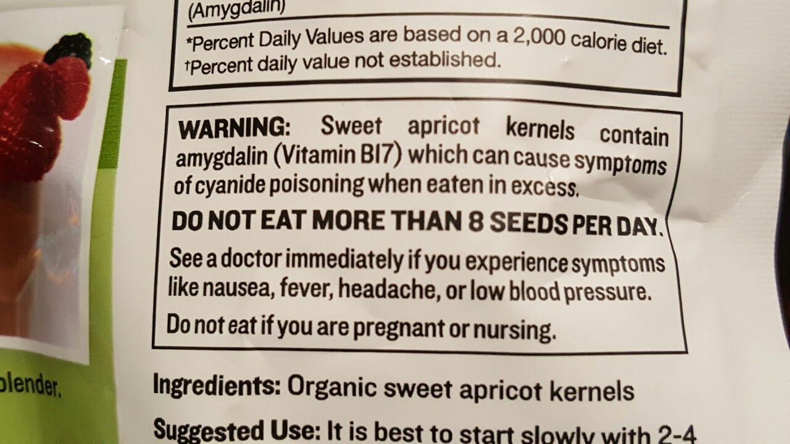

scatterdarknessscattersilence:
Proof you can market anything as a “Superfood” if it says Organic, Raw and Gluten-free.
THERE’S A FREAK’N WARNING ON THE BACK THAT IF EATEN IN EXCESS THEY CAUSE SYMPTOMS OF CYANIDE POISONING!
Their suggestion to eating these is to methodically poison yourself by eating 2-4 every other day. Since when has eating Apricot kernels been a thing in anyone’s diet!?
these can be found at Wholefoods
WHAT.
Jesus Christ, how is this legal
What in the HELLS O.O
Mmm, delicious poison.
Please do not eat the Healthy Poison O.O
Someone could fucking kill someone with these if they poured them in a ziploc bag and called them peanuts
QUESTION: if i eat enough of these, can i build up a tolerance to cyanide poisoning
Alright, folks, time to get Science Side of Tumblr on this. There is SO MUCH BULLSHIT packed into this that I ended up writing an obnoxiously long post, for which I apologize.
Let’s start with the product description page that Nora helpfully linked to. There’s just a ton of bullshit pseudoscience and feel-good woo in here and I’m gonna break it down.
“Apricot Kernels are one of the highest natural sources of a rare phytonutrient called amygdalin, also known as vitamin B17, an important nutrient which has largely disappeared from Western diets.”
Wow. Lots of fail in one sentence. Amygdalin is not, in fact, particularly rare; as the wiki page states, it’s found in “many plants” “particularly the Prunus genus, Poaceae (grasses), Fabaceae (legumes), and in other food plants, including linseed and manioc.” The only people who refer to amygdalin as a vitamin are those trying to make money from it. It is absolutely NOT a vitamin in any way, shape, or form. The definition of the word “vitamin” is “a compound which is required by the body in small amounts, which it cannot make on its own and thus must be obtained from the diet.” Your body does not *require* amygdalin in the least. In fact, if you consume too much of it, you will LITERALLY DIE OF CYANIDE POISONING. It is NOT an “important nutrient.” It has not “disappeared from Western diets” because it was never a part of any culture’s diet. Any group of people who ate too much of it probably died.
Moving on:
“Our raw, certified organic apricot kernels originate from wild apricot trees that have never come into contact with any sort of pesticide, herbicide or synthetic fertilizer. The apricots are harvested gently by hand, then the kernels are removed and slowly sun-dried. Our farmers pride themselves on cultivating the highest quality kernels possible while maintaining eco-friendly and sustainable agricultural practices.”
Wait, there’s a contradiction in there.
“…originate from wild apricot trees…”
“…farmers pride themselves on cultivating…”Listen, I don’t wanna be a pedantic asshole and debate semantics here, but if farmers are cultivating something, then it’s not wild. Okay? You can certainly have a bunch of people going out into a forest and harvesting things from the wild; for herbs this is called wildcrafting and for fruits/vegetables it is generally called foraging. No part of this involves cultivation or farms, which are about as far removed from wild plants as… well, most varieties of fruits and vegetables that we eat today.
Now we get to the hilarious part:
“WARNING: Sweet apricot kernels contain amygdalin (Vitamin B17) which can cause symptoms of cyanide poisoning when eaten in excess. DO NOT EAT MORE THAN 8 SEEDS PER DAY. See a doctor immediately if you experience symptoms like nausea, fever, headache, or low blood pressure. Do not eat if you are pregnant or nursing. Not intended for children”
THEY LITERALLY FUCKING TELL YOU THAT THESE CAUSE CYANIDE POISONING. Oh wait, no, my mistake, they tell you that they cause “symptoms of cyanide poisoning.” Well, you know what else causes “symptoms” of cyanide poisoning? CYANIDE. If you read the wiki article on amygdalin, you may have noticed this part:
“Amygdalin is hydrolyzed by intestinal β-glucosidase, emulsin, and amygdalase to gentiobiose and L-mandelonitrile. Gentiobiose is further hydrolyzed to glucose, whereas mandelonitrile is hydrolyzed to benzaldehyde and hydrogen cyanide. Hydrogen cyanide in sufficient quantities (allowable daily intake: ~0.6 mg) causes cyanide poisoning (fatal oral dose: 0.6-1.5 mg/kg).”
Also, from the article on apricot kernels that Nora also linked (thank you Nora), there’s this little nugget of info:
“On average, bitter apricot kernels contain about 5% amygdalin and sweet kernels about 0.9% amygdalin. These values correspond to 0.3% and 0.05% of cyanide. Since a typical apricot kernel weighs 600 mg, bitter and sweet varieties contain respectively 1.8 and 0.3 mg of cyanide.”
The kernels that these assholes are selling are the sweet variety, so they do have less cyanide than bitter apricot kernels do. However, let’s run the numbers, shall we? One sweet apricot kernel contains approximately 0.3 mg of cyanide, which means that to get to the fatal oral dose of cyanide (0.6-1.6 mg/kg), one would have to eat between 2 and 5 kernels per kilogram of body weight. Now, admittedly, this would take some effort; I weigh about 84 kg, so a fatal dose of these would be between 168 and 420 kernels. These are 8 oz bags, or approximately 226 g, and one kernel weighs about 600 mg, which means there are around 376 kernels in an average bag. This is WELL within the lethal range for me, and I’m a pretty big guy; someone who weighs a lot less than me would have to eat a lot fewer kernels to get a lethal dose.
Let’s not mince words, folks; cyanide poisoning is fucking awful. Cyanide blocks an enzyme that your cells need in order to properly process oxygen. It basically causes you to suffocate on a cellular level. Sounds like fun, doesn’t it?
And these things are legally for sale? In fucking HEALTH FOOD STORES?!? Can you imagine if a small child got into one of these bags? I can only hope these alternative health wingnuts buying these things are keeping them away from their kids.
Oh, what’s that? You’ll be okay as long as you don’t eat the whole bag? Well, I have unfortunate news for you. Cyanide is not like iocaine powder; you don’t build up an immunity to it by ingesting small amounts daily for years. It can still kill you, although in much more horrible ways than acute cyanide poisoning. From wiki: “Exposure to lower levels of cyanide over a long period results in increased blood cyanide levels, which can result in weakness and a variety of symptoms, including permanent paralysis, nervous lesions, hypothyroidism, and miscarriages. Other effects include mild liver and kidney damage.” Sounds like fun, doesn’t it?
Oh, and if you want a real treat, read the reviews on the product page above. Hoooooooly shit, people can fool themselves into thinking ANYTHING is good for them if it has the words “organic” and “natural” on the package, and if the seller hypes it up to be this AMAZING LONG-LOST SUPERFOOD OMG. Here’s some of the highlights, in case you don’t want to read them all for fear of losing too many brain cells (note that all of these quotes are from separate reviews):
“I eat these apricot kernels because of the B17 cancer fighting factor.” No such thing as B17, and amygdalin has been shown to be useless against cancer.
“I noticed that my energy is constant all day and I believe they are actually helping me to lose weight.” Chances are it’s whatever else you’re putting in your smoothie. Keep eating these long enough and I doubt you’ll have energy all day.
“I love them even more after researching all of the health properties!” Clearly you didn’t do any research outside of browsing a couple articles on fucking David Wolfe’s website or some shit.
This next one has three separate hilarious bits so I’ll quote all three parts together:
“I still am not sure what they do for me yet; however they are loaded with B17 which is said to be really good for certain health benefits.” 1/Well, that sounds promising. 2/Loaded with cyanide, yum! 3/“certain health benefits.” Not sure which ones, but a website said it, so it must be true!“Too bad I can’t eat too many without lowering blood pressure too much.” I can only assume that this person is referring to the fact that your blood pressure drops to 0/0 when you’re dead.
“I like them…not too bitter, but enough so that I know I am getting what I need.” Because something being bitter is a great indication that it’s good for you, amirite? I mean, kale is great for you, and it’s bitter, so that must mean the bitterness is what makes it good for you!
“I have cancer and eat 5 kernels, 3 times a day.. I eat them with some food so I don’t end up with a stomach ache.” I would make a comment about how you should know better than to eat things that give you a stomach ache, but then again, this person could conceivably be on chemo, which also causes awful symptoms, so maybe they’re just conditioned to believe that things that make them feel horrible are actually helping cure them.
“I eat a few a day and I will hopefully see my blood pressure down next dr appt” …folks, please don’t eat poison instead of taking blood pressure medication. I know doctors tend to overprescribe pills, but COME THE FUCK ON.
“I’m trying to get off medication (over 30 years) and want to use natural food to help heal my body!” Which is an admirable goal, and certainly possible. But this is not the way to do it. You need to do your research into the foods you eat to try and heal yourself, and if you did the SLIGHTEST BIT OF RESEARCH you would have found that these things contain CYANIDE. Which absolutely WILL NOT heal your body.
“they are crunchy, aromatic, and slightly bitter, and numb the tip of my tongue when I chew on more than a few at a time.” HOW IS THIS NOT A GIANT RED FLAG HOLY FUCKING SHIT
“It is important to read the information about how many to consume per day as it is a medicinal food with great potential.” Great potential to kill you, yes. Medicinal food, not so much.
tl;dr Apricots are the devil’s nutsack, please don’t eat his testicles.